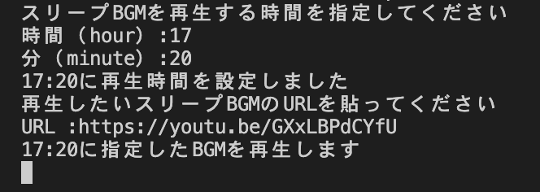

私たちの班では、皆が抱えている問題である「朝起きられない」「授業中に眠くなる」「授業後になぜか目が覚める」という眠気という大きな悩みをプログラミングで対処することを考えた。
そして考えたプログラムは以下である。
- import schedule
- import time
- #時間設定
- print("スリープBGMを再生する時間を指定してください")
- hour = input("時間（hour）:")
- minute = input("分（minute）:")
- target = f"{hour.zfill(2)}:{minute.zfill(2)}"
- print(target+"に再生時間を設定しました")
- #再生したい動画を指定
- print("再生したいスリープBGMのURLを貼ってください")
- movie = input("URL :")
- print(target+"に指定したBGMを再生します")
- #defは「定義」ということ
- def job():
- import webbrowser
- webbrowser.open(movie)
- schedule.every().day.at(target).do(job)
- #時間待ち
- while True:
- schedule.run_pending()
- time.sleep(60)
このプログラムで、自分で設定した時間に指定した動画を流すことが可能になる。
聞くと眠くなる動画を、この時間に睡眠をとり始めると翌日健康な暮らしを送れると思われる時間に設定することで、
強制的な眠気を呼び起こし、生活習慣の改善と授業中に起こる睡魔への対策につながると考えられる。
実行すると下記のようになる。

実際に時間になると動画が再生される。
参考サイト
※これは同じ班員のサカグチさんのを共有させていただいたものです。